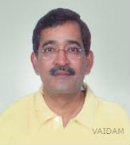

Dr. Sandeep Shah
QUALIFICATIONS
Consultant , Fellowship, MS, MBBS, 20 years of experience
ABOUT DOCTOR
Dr. Sandeep Shah is an infertility specialist and Reproductive Medicine expert with 20+ years of experience.
After MBBS and MS, he completed his training in Reproductive Medicine at Tuft University, Boston, USA in 1994.
He has been key figure in establishing IVF and infertility centers at various places in India, Ghana, Kenya and Bangladesh.
SPECIALIZATION :
Reproductive Medicine,
Fertility,
Family Planning,
Reproductive health.
WORK EXPERIENCE
Consultant, Nova IVI Fertility, Ahmedabad
List Of Treatments
IVF,
Intracytoplasmic Sperm Injection Procedure ICSI,
Frozen Embryo Transfer (FET),
Transvaginal Oocyte Retrieval (TVOR) (Oocyte Retrieval),
Tubal Embryo Transfer (TET) Procedure,
GIFT and ZIFT Procedure,
Blastocyst Culture and Transfer,
Fertility Surgeries,
Fibroid Removal Surgery,
Myomectomy Surgery,
Operative Laparoscopy,
Laparoscopic Vaginal Hysterectomy,
Laparoscopic supra cervical Hysterectomy,
Total Laparoscopic Hysterectomy,
Laparoscopic Tubal Ligation.